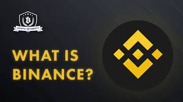

what is cryptocurrency?
A cryptocurrency, crypto-currency, or crypto[a] is a digital currency designed to work as a medium of exchange through a computer network that is not reliant on any central authority, such as a government or bank, to uphold or maintain it.[2] It is a decentralized system for verifying that the parties to a transaction have the money they claim to have, eliminating the need for traditional intermediaries, such as banks, when funds are being transferred between two entities.[3]
Individual coin ownership records are stored in a digital ledger, which is a computerized database using strong cryptography to secure transaction records, control the creation of additional coins, and verify the transfer of coin ownership.[4][5][6] Despite their name, cryptocurrencies are not considered to be currencies in the traditional sense, and while varying treatments have been applied to them, including classification as commodities, securities, and currencies, cryptocurrencies are generally viewed as a distinct asset class in practice.[7][8][9] Some crypto schemes use validators to maintain the cryptocurrency. In a proof-of-stake model, owners put up their tokens as collateral. In return, they get authority over the token in proportion to the amount they stake. Generally, these token stakers get additional ownership in the token over time via network fees, newly minted tokens, or other such reward mechanisms.[10]
Cryptocurrency does not exist in physical form (like paper money) and is typically not issued by a central authority. Cryptocurrencies typically use decentralized control as opposed to a central bank digital currency (CBDC).[11] When a cryptocurrency is minted, or created prior to issuance, or issued by a single issuer, it is generally considered centralized. When implemented with decentralized control, each cryptocurrency works through distributed ledger technology, typically a blockchain, that serves as a public financial transaction database.[12]
The first cryptocurrency was Bitcoin, which was first released as open-source software in 2009. As of June 2023, there were more than 25,000 other cryptocurrencies in the marketplace, of which more than 40 had a market capitalization exceeding $1 billion.[13]
what are the types of coins?
- bitcoin
- altcoins
- stablecoins
>
